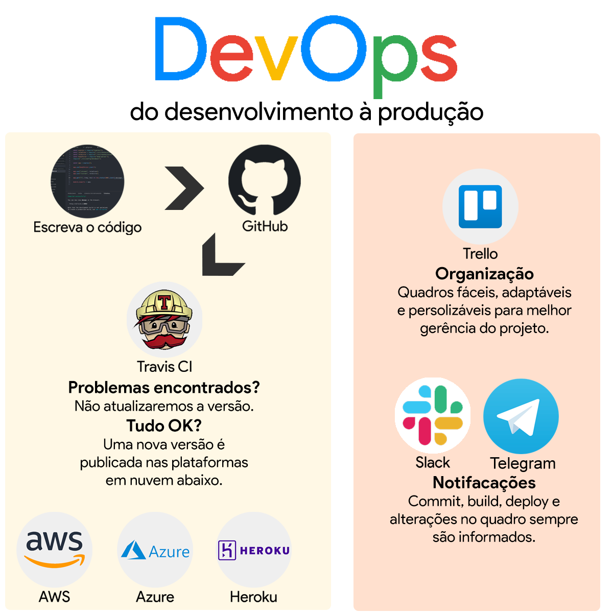

Documentação
Apresentação
Nome do projeto
DevOps: do desenvolvimento à produção.
Descrição
Aqui entrará uma descrição detalhada
Autores do projeto
Lucas Sodré Teixeira
Autores da aplicação Escola Rest utilizada para demonstração
Os autores da aplicação Escola REST informados abaixo permitiram que o autor do
projeto DevOps: do desenvolvimento à produção.
desenvolvido para o Projeto de
Conclusão utilizasse a aplicação de código livre Escola Rest.
Objetivos
O desenvolvimento de software sempre teve os seus processos alterados ao longo tempo buscando melhor desempenho desde o levantamento de requisitos até a versão em produção. As fábricas de software através dos métodos ágeis conseguiram implementar diversas melhorias no processo, fazendo iterações e realizando a implantação de pequenos módulos para maximizar o ROI (Return on Investiment). Os métodos ágeis possibilitaram otimizações na parte de desenvolvimento e operação, fazendo com que o tempo ocioso fosse mitigado e comparado aos primeiros métodos tradicionais houvesse um ganho de performance. Porém, tais processos possuem diversas falhas do início ao fim do desenvolvimento do software e após ser implantado em produção, fazendo com que a eficiência fosse contestada.
Diversos problemas foram notados durante o ciclo de vida do software. Durante a codificação diversos defeitos podem ser implementados no software, seja por motivos como a falta de conhecimento do desenvolvedor, curto prazo ou requisito incorreto. Caso o defeito seja implementado por conta do requisito incorreto a equipe de QA (Quality Assurance) ou Garantia de Qualidade, irá permitir que este defeito seja passado adiante, podendo ser percebido pela homologação do cliente ou descoberto somente em produção. Para que uma versão de correção seja implementada o processo poderá demorar algumas horas, pois é necessário que a correção seja criada, gerada versão em ambiente de testes e a correção ser testada, gerada a versão em ambiente de homologação e ser aprovada, gerada versão no servidor de produção e aguardar o tempo de reinício do servidor, que em média possui tempo aproximado entre 3 e 10 minutos, fazendo com que grandes prejuízos possam acontecer.
Pensando nesses problemas foi criado o conceito de DevOps, que é a combinação de filosofias culturais, práticas e ferramentas que aumentam a capacidade de uma empresa de distribuir aplicativos e serviços em alta velocidade: otimizando e aperfeiçoando produtos em um ritmo mais rápido do que o das empresas que usam processos tradicionais de desenvolvimento de software e gerenciamento de infraestrutura. Essa velocidade permite que as empresas atendam melhor aos seus clientes e compitam de modo mais eficaz no mercado.. [AWS Amazon]. Com a implementação de um modelo de DevOps, as equipes de desenvolvimento e operações não são mais separadas. Com as combinações de filosofia, prática e ferramentas essas duas equipes são combinadas em uma só. Os engenheiros trabalham durante todo o ciclo de vida do software, desde a fase de desenvolvimento e testes à fase de implantação e operações, e desenvolvem várias qualificações não limitadas a uma única função. Para incrementar essa única equipe de engenheiros as partes de controle de qualidade e segurança podem passar a integrar essa única equipe que gira em torno do software. As políticas de DevOps utilizam de práticas para automatizar processos que historicamente sempre foram manuais e lentos. Eles usam uma pilha de tecnologia e ferramentas que os ajudam a operar e desenvolver aplicativos de modo rápido e confiável. Essas ferramentas também ajudam os engenheiros a realizar tarefas independentemente (por exemplo, implantação de código e provisionamento de infraestrutura) que normalmente exigiria a ajuda de outras equipes, fazendo com que a agilidade da equipe cresça. [AWS Amazon].
Filosofias culturais, práticas e ferramentas culminam em benefícios nas áreas de velocidade de operação, entrega rápida de versões, confiabilidade do código em produção, escalabilidade de acordo com a demanda de acessos, colaboração entre pessoas e times e segurança. Tais benefícios são alcançados através de práticas como Integração Contínua, Entrega Contínua, Microsserviços, Infraestrutura como código, Monitoramento e registro e Comunicação e colaboração.
Informações técnicas
Plataformas em nuvem
Linguagem de programação
Banco de dados
Visão geral
| # | Nome | Projeto | Descrição curta |
|---|---|---|---|
| 1 | Visual Studio Code | https://code.visualstudio.com/ | Editor de código fotne |
| 2 | GitHub | https://github.com/ | Repositório para código de programação |
| 3 | Travis CI | https://travis-ci.org/ | Integração Contínua |
| 4 | Heroku | https://heroku.com/ | Plataforma de hospedagem em nuvem |
| 5 | Amazon Web Services (AWS) | https://aws.amazon.com/ | Plataforma de hospedagem em nuvem |
| 6 | Microsoft Azure | https://azure.microsoft.com/ | Plataforma de hospedagem em nuvem |
| 7 | MongoDB | https://www.mongodb.com/ | Banco de dados orientado a documento |
| 8 | Slack | https://slack.com/ | Plataforma corporativa de mensagens |
| 9 | Telegram | https://telegram.org/ | Plataforma de mensagens |
| 10 | Gmail | https://gmail.com/ | Serviço de e-mail do Google |
Diagrama Croqui
Fluxo do DevOps proposto

Diagrama Croqui
Fluxo do DevOps proposto
Versionamento
- Os versionamentos são classificados dos mais recentes para os mais antigos.
- Originalmente há uma versão por dia.
- Havendo mais de uma versão por dia serão identificadas, além do número da versão mais alto, pelo horário mais recente da publicação.
| # | Descrição simples | Data dd/mm/aaaa | Horário hh:mm |
|---|---|---|---|
| 1.0.15 | Alterado o link da aplicação hospedada no Heroku | 22/05/2019 | 18h11m |
| 1.0.14 | Criada a página index.ejs | 21/05/2019 | 21h29m |
| 1.0.13 | Alterada a imagem do README.md | 21/05/2019 | 15h37m |